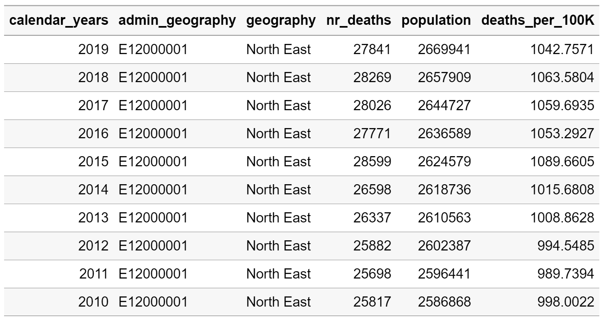

Using the monstR package to estimate the mortality rate in England and Wales
Sebastien Peytrignet
2022-09-06
mortality-rate-using-population-and-deaths.RmdVignette background
The monstR package interacts with the UK’s Office for National Statistics (ONS) API, enabling us to easily extract their datasets for analysis. In this vignette, we will demonstrate how to use monstR to download the following ONS tables:
- Mid-year population estimates by region, age and gender
- Deaths registered weekly in England and Wales by region
We will then merge both of those datasets to compute a time-series of mortality rates in England and Wales by sub-region. We will also plot those statistics.
Find identifiers for desired ONS datasets
The function ons_available_datasets() is useful to find out what datasets are available through the ONS API.
datasets <- ons_available_datasets()Each dataset is associated with an identifier, which we can retrieve by inspecting the output from ons_available_datasets(). First, we will extract the identifier for the desired population dataset (‘Mid-year population estimates by region, age and gender’).
population_id <- datasets %>%
filter(str_detect(tolower(title),'population estimates for uk')) %>%
pull(id)
population_id
datasets %>%
filter(id %in% population_id) %>%
select(title)Then, we will do the same for our desired dataset recording deaths by region.
Browse editions and versions available for each dataset
ONS datasets are usually associated with multiple editions and versions. Different editions may contain different variables or be presented in different formats, while versions usually refresh or update the content with new data points. Before downloading a dataset with monstR, it is recommended to know beforehand which edition and version you would like to donwload.
The function ons_available_editions returns available editions, while ons_available_versions return available versions.
We will check the editions and versions associated with the population dataset.
### Editions available for the population dataset
ids_and_editions_pop <- map(population_id, ons_available_editions) %>%
set_names(population_id) %>%
bind_rows(.id='id') %>%
mutate(.,id_edition=paste(id,edition,sep="-"))
ids_and_editions_pop
### Versions available for each edition
ids_and_editions_and_versions_pop <- mapply(id=ids_and_editions_pop$id,
edition=ids_and_editions_pop$edition,
ons_available_versions)
names(ids_and_editions_and_versions_pop) <- ids_and_editions_pop$id_edition
ids_and_editions_and_versions_popFrom the dataset with identifier mid-year-pop we would like to download edition mid-2018-april-2019-geography and version 1.
We will also explore editins and vesions for the deaths dataset.
### Editions available for the deaths dataset
ids_and_editions_deaths <- map(mortality_id, ons_available_editions) %>%
set_names(mortality_id) %>%
bind_rows(.id='id') %>%
mutate(.,id_edition=paste(id,edition,sep="-"))
ids_and_editions_deaths
### Versions available for each edition
ids_and_editions_and_versions_deaths <- mapply(id=ids_and_editions_deaths$id,
edition=ids_and_editions_deaths$edition,
ons_available_versions)
names(ids_and_editions_and_versions_deaths) <- ids_and_editions_deaths$id_edition
ids_and_editions_and_versions_deathsFrom the dataset with identifier weekly-deaths-local-authority we would like to download edition 2010-19 and version 1.
Download both ONS datasets
After inspection in the previous step, we have decided which edition and version pair we would like to download for each dataset.
The following command sets up the pipeline using the monstR default settings.
set_up_df <- monstr_pipeline_defaults() %>%
ons_datasets_setup()We feed the edition and version to function ons_dataset_by_id, while ons_download downloads the data. Additional functions monstr_read_file, monstr_clean and monstr_write_clean read, clean and write the desired datasets.
We can now download our population dataset.
set_up_df %>%
ons_dataset_by_id(id=population_id,edition="mid-2019-april-2020-geography",version=1) %>%
ons_download(format="csv") %>%
monstr_read_file() %>%
monstr_clean() %>%
monstr_write_clean(format="all")And our deaths dataset.
set_up_df %>%
ons_dataset_by_id(id=mortality_id,edition="2010-19",version=1) %>%
ons_download(format="csv") %>%
monstr_read_file() %>%
monstr_clean() %>%
monstr_write_clean(format="all")Import and clean population dataset
The cleaned data can be found in your root project folder under data/clean/ons/.
ons_midyear_pop <- fread(here("data","clean","ons","mid-year-pop-est","mid-2019-april-2020-geography","mid-year-pop-est-v1.csv"), header=TRUE, sep=",", check.names=TRUE) %>%
rename(.,population=v4_0)For this analysis, we will keep the number of deaths for all ages and both genders in each year and region.
ons_midyear_pop_total <- filter(ons_midyear_pop,age=="Total"&sex=="All") %>%
select(.,population,calendar_years,admin_geography) %>%
arrange(.,admin_geography,desc(calendar_years))
knitr::kable(head(ons_midyear_pop_total, 10))
Import and clean deaths dataset
ons_weekly_deaths_region <- fread(here("data","clean","ons","weekly-deaths-region","2010-19","weekly-deaths-region-v1.csv"), header=TRUE, sep=",", check.names=TRUE) %>%
rename(.,nr_deaths=v4_1) %>%
arrange(.,admin_geography,desc(calendar_years))
knitr::kable(head(ons_weekly_deaths_region, 10))
This data is currently presented as a weekly time series, with one row per week. We will aggregate it into a yearly time series, thus matching the ONS population dataset.
ons_weekly_deaths_region <- as.data.table(ons_weekly_deaths_region)
ons_weekly_deaths_region_annual <- ons_weekly_deaths_region[, list(
geography = first(geography),
nr_deaths=sum(nr_deaths,na.rm=TRUE)),
by = list(calendar_years,admin_geography)]
knitr::kable(head(ons_weekly_deaths_region_annual, 10))
Merge datasets
We are now ready to merge our population data into our deaths data, which will allow us to compute a new variable: the death rate per 100,000 residents for a given region and year.
ons_weekly_deaths_region_annual <- left_join(ons_weekly_deaths_region_annual,
ons_midyear_pop_total,
by=c("calendar_years" = "calendar_years",
"admin_geography" = "admin_geography"))
ons_weekly_deaths_region_annual <- mutate(ons_weekly_deaths_region_annual,
deaths_per_100K=nr_deaths/population*100000)
knitr::kable(head(ons_weekly_deaths_region_annual, 10))
Present results in a chart
Having used the monstR package to download our required ONS tables and processed the data, we are ready to display the mortality rate by year according to region.
ons_weekly_deaths_region_annual$bold <- ifelse(ons_weekly_deaths_region_annual$geography=="England and Wales",1,0)
ggplot(ons_weekly_deaths_region_annual,
aes(x=factor(calendar_years), y=deaths_per_100K, group=geography)) +
geom_line(aes(color=geography,size = factor(bold)))+
geom_point(aes(color=geography)) +
theme(text = element_text(size = 10),
panel.border = element_blank(),
panel.grid.major = element_blank(),
panel.grid.minor = element_blank(),
panel.background = element_blank(),
legend.key=element_blank()) +
ggtitle("Mortality rate by region in England and Wales") +
xlab("Year") + ylab("Number of deaths per 100,000") +
scale_color_brewer(palette="Set3",name = "Region") +
scale_size_manual(values = c(0.5,1.25),guide = "none") +
scale_y_continuous(labels = function(x) format(x, big.mark = ",",
scientific = FALSE))